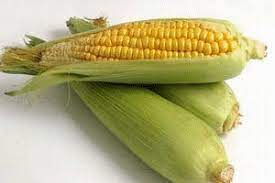
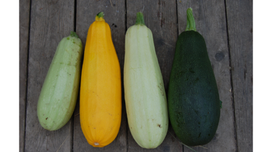
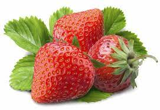
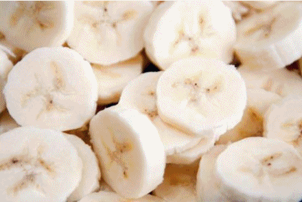

Ez egy bekezdés: bekezdésszöveg1 bekezdésszöveg1 bekezdésszöveg1 bekezdésszöveg1 bekezdésszöveg1 bekezdésszöveg1 bekezdésszöveg1 bekezdésszöveg1 bekezdésszöveg1 bekezdésszöveg1 bekezdésszöveg1 bekezdésszöveg1
Ez egy másik bekezdés: bekszöv2 bekszöv2 bekszöv2 bekszöv2 bekszöv2 bekszöv2 bekszöv2 bekszöv2 bekszöv2 bekszöv2 bekszöv2 bekszöv2 bekszöv2 bekszöv2 bekszöv2 bekszöv2 bekszöv2 bekszöv2 bekszöv2 bekszöv2 bekszöv2 bekszöv2 bekszöv2 bekszöv2 bekszöv2 bekszöv2 bekszöv2 bekszöv2 bekszöv2 bekszöv2 bekszöv2 bekszöv2 bekszöv2 bekszöv2 bekszöv2 bekszöv2 bekszöv2 bekszöv2 bekszöv2 bekszöv2 bekszöv2 bekszöv2 bekszöv2 bekszöv2 bekszöv2 bekszöv2 bekszöv2 bekszöv2 bekszöv2 bekszöv2 bekszöv2 bekszöv2 bekszöv2 bekszöv2 bekszöv2 bekszöv2 bekszöv2 bekszöv2 bekszöv2 bekszöv2 bekszöv2 bekszöv2 bekszöv2 bekszöv2 bekszöv2 bekszöv2 bekszöv2 bekszöv2 bekszöv2 bekszöv2 bekszöv2 bekszöv2 bekszöv2 bekszöv2 bekszöv2 bekszöv2 bekszöv2 bekszöv2 bekszöv2 bekszöv2 bekszöv2 bekszöv2 bekszöv2 bekszöv2 bekszöv2 bekszöv2 bekszöv2 bekszöv2 bekszöv2 bekszöv2 bekszöv2 bekszöv2 bekszöv2 bekszöv2 bekszöv2 bekszöv2 bekszöv2 bekszöv2 bekszöv2 bekszöv2 bekszöv2 bekszöv2 bekszöv2 bekszöv2 bekszöv2 bekszöv2 bekszöv2 bekszöv2 bekszöv2 bekszöv2 bekszöv2 bekszöv2 bekszöv2 bekszöv2 bekszöv2 bekszöv2 bekszöv2 bekszöv2 bekszöv2 bekszöv2 bekszöv2 bekszöv2 bekszöv2 bekszöv2 bekszöv2 bekszöv2 bekszöv2 bekszöv2 bekszöv2 bekszöv2 bekszöv2 bekszöv2 bekszöv2 bekszöv2 bekszöv2 bekszöv2 bekszöv2 bekszöv2 bekszöv2 bekszöv2 bekszöv2 bekszöv2 bekszöv2 bekszöv2 bekszöv2 bekszöv2 bekszöv2 bekszöv2 bekszöv2 bekszöv2 bekszöv2 bekszöv2 bekszöv2 bekszöv2 bekszöv2 bekszöv2 bekszöv2 bekszöv2 bekszöv2 bekszöv2 bekszöv2 bekszöv2
| Vitaminok | A (retinol) |
B1 (tiamin) |
B2 (riboflavin) |
B3 (niacin) |
B6 (Piridoxin) |
B7 (biotin) |
B9 (folsav) |
C (aszkorbinsav) |
E (tokoferol) |
K (fillokinon) |
|
|---|---|---|---|---|---|---|---|---|---|---|---|
| (mg) | μg | (mg) | (mg) | (mg) | (μg) | (μg) | (mg) | (mg) | (μg) | ||
| alma | 0,05 | 50 | 50 | 0,5 | 0,07 | 1 | 6 | 5 | 0,6 | 2,5 | |
| csipkebogyó | n/a | 100 | n/a | n/a | n/a | n/a | n/a | 400 | n/a | 90 | |
| fekete ribiszke | 0,1 | 60 | 10 | 0,3 | 0,02 | 2,4 | n/a | 160 | 1 | n/a | |
| málna | 0,08 | 20 | 30 | 0,4 | 0,05 | 2,3 | n/a | 30 | 1,4 | n/a | |
| kajszibarack | 1,8 | 20 | 30 | 0,7 | 0,06 | 1,7 | 33 | 10 | 0,5 | n/a | |
| meggy | 0,3 | 50 | 20 | 0,3 | 0,05 | 0,8 | n/a | 10 | n/a | n/a | |
| őszibarack | 0,4 | 20 | 20 | 0,9 | 0,07 | 1,8 | 2,5 | 7 | 0,6 | n/a | |
| szőlő | 0,3 | 50 | 50 | 0,4 | 1,4 | 5,2 | n/a | 5 | n/a | n/a | |
| szilva | 0,2 | 50 | 20 | 0,5 | 0,04 | 0,1 | 0,9 | 6 | 0,8 | n/a | |
| napi szükséglet | 0,8 | 1,3 | 1,5 | 1,7 | 2 | 60 | 200 | 60 | 12 | 65 | |
Az első alcím első bekezdése. Az első alcím első bekezdése. Az első alcím első bekezdése. Az első alcím első bekezdése. Az első alcím első bekezdése. Az első alcím első bekezdése. Az első alcím első bekezdése. Az első alcím első bekezdése. Az első alcím első bekezdése. Az első alcím első bekezdése. Az első alcím első bekezdése. Az első alcím első bekezdése. Az első alcím első bekezdése. Az első alcím első bekezdése.
Egy bekezdés, amely újabb blokkokat tartalmaz....
Beágyazott bekezdés1: belső bekezdés1 belső bekezdés1 belső bekezdés1 belső bekezdés1 belső bekezdés1 belső bekezdés1 belső bekezdés1 belső bekezdés1 belső bekezdés1 belső bekezdés1 belső bekezdés1 belső bekezdés1 belső bekezdés1 belső bekezdés1 belső bekezdés1 belső bekezdés1 belső bekezdés1 belső bekezdés1 belső bekezdés1 belső bekezdés1
Beágyazott bekezdés2: belső bekezdés2 belső bekezdés2 belső bekezdés2 belső bekezdés2 belső bekezdés2 belső bekezdés2 belső bekezdés2 belső bekezdés2 belső bekezdés2 belső bekezdés2 belső bekezdés2 belső bekezdés2 belső bekezdés2 belső bekezdés2 belső bekezdés2 belső bekezdés2 belső bekezdés2 belső bekezdés2 belső bekezdés2 belső bekezdés2 belső bekezdés2 belső bekezdés2 belső bekezdés2 belső bekezdés2 belső bekezdés2 belső bekezdés2 belső bekezdés2 belső bekezdés2 belső bekezdés2 belső bekezdés2 belső bekezdés2 belső bekezdés2 belső bekezdés2 belső bekezdés2 belső bekezdés2 belső bekezdés2 belső bekezdés2 belső bekezdés2 belső bekezdés2 belső bekezdés2 belső bekezdés2 belső bekezdés2 belső bekezdés2 belső bekezdés2 belső bekezdés2 belső bekezdés2 belső bekezdés2 belső bekezdés2 belső bekezdés2 belső bekezdés2 belső bekezdés2 belső bekezdés2 belső bekezdés2 belső bekezdés2 belső bekezdés2 belső bekezdés2 belső bekezdés2 belső bekezdés2 belső bekezdés2 belső bekezdés2 belső bekezdés2 belső bekezdés2
 Beágyazott bekezdés3: belső bekezdés3 belső bekezdés3 belső bekezdés3 belső bekezdés3 belső bekezdés3 belső bekezdés3 belső bekezdés3 belső bekezdés3 belső bekezdés3 belső bekezdés3 belső bekezdés3 belső bekezdés3 belső bekezdés3 belső bekezdés3 belső bekezdés3 belső bekezdés3 belső bekezdés3 belső bekezdés3 belső bekezdés3 belső bekezdés3 belső bekezdés3 belső bekezdés3 belső bekezdés3 belső bekezdés3 belső bekezdés3 belső bekezdés3 belső bekezdés3 belső bekezdés3 belső bekezdés3 belső bekezdés3 belső bekezdés3 belső bekezdés3 belső bekezdés3 belső bekezdés3 belső bekezdés3 belső bekezdés3 belső bekezdés3 belső bekezdés3 belső bekezdés3 belső bekezdés3 belső bekezdés3 belső bekezdés3 belső bekezdés3 belső bekezdés3 belső bekezdés3 belső bekezdés3 belső bekezdés3 belső bekezdés3 belső bekezdés3 belső bekezdés3 belső bekezdés3 belső bekezdés3 belső bekezdés3 belső bekezdés3 belső bekezdés3 belső bekezdés3 belső bekezdés3 belső bekezdés3 belső bekezdés3 belső bekezdés3 belső bekezdés3 belső bekezdés3 belső bekezdés3 belső bekezdés3 belső bekezdés3 belső bekezdés3 belső bekezdés3 belső bekezdés3 belső bekezdés3 belső bekezdés3 belső bekezdés3 belső bekezdés3 belső bekezdés3 belső bekezdés3 belső bekezdés3 belső bekezdés3 belső bekezdés3 belső bekezdés3 belső bekezdés3 belső bekezdés3 belső bekezdés3 belső bekezdés3 belső bekezdés3 belső bekezdés3 belső bekezdés3 belső bekezdés3 belső bekezdés3 belső bekezdés3 belső bekezdés3 belső bekezdés3
Egy bekezdés a 2. alcímet követően: bek21 bek21 bek21 bek21 bek21 bek21 bek21 bek21 bek21 bek21 bek21 bek21 bek21 bek21 bek21 bek21 bek21 bek21 bek21 bek21 bek21 bek21 bek21 bek21 bek21 bek21 bek21 bek21 bek21 bek21 bek21 bek21 bek21 bek21 bek21 bek21 bek21 bek21 bek21 bek21 bek21 bek21 bek21 bek21 bek21 bek21 bek21 bek21 bek21 bek21 bek21 bek21 bek21 bek21 bek21 bek21 bek21 bek21 bek21 bek21 bek21 bek21 bek21 bek21 bek21 bek21 bek21 bek21 bek21 bek21 bek21 bek21 bek21 bek21 bek21 bek21 bek21 bek21 bek21 bek21 bek21 bek21 bek21 bek21 bek21 bek21 bek21 bek21 bek21 bek21 bek21 bek21 bek21 bek21 bek21 bek21 bek21 bek21 bek21 bek21 bek21 bek21 bek21 bek21 bek21
Egy bekezdés a 2. alcímet követően: bek22 bek22 bek22 bek22 bek22 bek22 bek22 bek22 bek22 bek22 bek22 bek22 bek22 bek22 bek22 bek22 bek22 bek22 bek22 bek22 bek22 bek22 bek22 bek22 bek22 bek22 bek22 bek22 bek22 bek22 bek22 bek22 bek22 bek22 bek22 bek22 bek22 bek22 bek22 bek22 bek22 bek22 bek22 bek22 bek22 bek22 bek22 bek22 bek22 bek22 bek22 bek22 bek22 bek22 bek22 bek22 bek22 bek22 bek22 bek22 bek22 bek22 bek22 bek22 bek22 bek22 bek22 bek22 bek22 bek22 bek22 bek22 bek22 bek22 bek22 bek22 bek22 bek22 bek22 bek22 bek22 bek22 bek22 bek22 bek22 bek22 bek22 bek22 bek22 bek22 bek22 bek22 bek22 bek22 bek22 bek22 bek22 bek22 bek22 bek22 bek22 bek22 bek22 bek22 bek22 bek22 bek22 bek22 bek22 bek22 bek22 bek22 bek22 bek22 bek22 bek22 bek22 bek22 bek22 bek22 bek22 bek22 bek22 bek22 bek22 bek22 bek22 bek22 bek22 bek22 bek22 bek22 bek22 bek22 bek22 bek22 bek22 bek22 bek22 bek22 bek22 bek22 bek22 bek22 bek22 bek22 bek22 bek22 bek22 bek22 bek22 bek22 bek22 bek22 bek22 bek22 bek22 bek22 bek22 bek22 bek22 bek22 bek22 bek22 bek22 bek22 bek22 bek22 bek22 bek22 bek22 bek22 bek22 bek22 bek22 bek22 bek22 bek22 bek22 bek22 bek22 bek22 bek22 bek22 bek22 bek22 bek22 bek22 bek22 bek22 bek22 bek22 bek22 bek22 bek22 bek22 bek22 bek22
Egy bekezdés a 2. alcímet követően: bek23 bek23 bek23 bek23 bek23 bek23 bek23 bek23 bek23 bek23 bek23 bek23 bek23 bek23 bek23 bek23 bek23 bek23 bek23 bek23 bek23 bek23 bek23 bek23 bek23 bek23 bek23 bek23 bek23 bek23 bek23 bek23 bek23 bek23 bek23 bek23 bek23 bek23 bek23 bek23 bek23 bek23 bek23 bek23 bek23 bek23 bek23 bek23 bek23 bek23 bek23 bek23
Egy bekezdés a 2. alcímet követően: bek24 bek24 bek24 bek24 bek24 bek24 bek24 bek24 bek24 bek24 bek24 bek24 bek24 bek24 bek24 bek24 bek24 bek24 bek24 bek24 bek24 bek24 bek24 bek24 bek24 bek24 bek24 bek24 bek24 bek24 bek24 bek24 bek24 bek24 bek24 bek24 bek24 bek24 bek24 bek24 bek24 bek24 bek24 bek24 bek24 bek24 bek24 bek24 bek24 bek24 bek24 bek24 bek24 bek24 bek24 bek24 bek24 bek24 bek24 bek24 bek24 bek24 bek24 bek24 bek24 bek24 bek24 bek24 bek24 bek24 bek24 bek24 bek24 bek24 bek24 bek24 bek24 bek24 bek24 bek24 bek24 bek24 bek24 bek24 bek24 bek24 bek24 bek24 bek24 bek24 bek24 bek24 bek24 bek24 bek24 bek24 bek24 bek24 bek24 bek24 bek24 bek24 bek24 bek24 bek24 bek24 bek24 bek24 bek24
Ez az utolsó bekezdés a 2. alcím után: bek25 bek25 bek25 bek25 bek25 bek25 bek25 bek25 bek25 bek25 bek25 bek25 bek25 bek25 bek25 bek25 bek25 bek25 bek25 bek25 bek25 bek25 bek25 bek25 bek25 bek25 bek25 bek25 bek25 bek25 bek25 bek25 bek25 bek25 bek25 bek25 bek25 bek25 bek25 bek25 bek25 bek25 bek25 bek25 bek25 bek25 bek25 bek25 bek25 bek25 bek25 bek25 bek25 bek25 bek25 bek25 bek25 bek25 bek25 bek25 bek25 bek25 bek25 bek25 bek25 bek25 bek25 bek25 bek25 bek25 bek25 bek25 bek25 bek25 bek25 bek25 bek25 bek25 bek25 bek25 bek25 bek25 bek25 bek25 bek25 bek25 bek25 bek25 bek25 bek25 bek25 bek25 bek25 bek25 bek25 bek25 bek25 bek25 bek25 bek25 bek25 bek25 bek25 bek25 bek25 bek25 bek25 bek25 bek25 bek25 bek25
| Megnevezés | Kcal | Fehérje | Zsír | Szénhidrát |
|---|---|---|---|---|
| Brokkoli | 30 | 2 | - | 4 |
| Burgonya | 90 | 3 | - | 20 |
| Cékla | 30 | 1 | - | 6 |
| Fehérrépa | 30 | 1 | - | 6 |
| Fejes káposzta | 30 | 2 | - | 6 |
| Fejes saláta | 15 | 1 | - | 2 |
| Gomba (csiperke, vargánya) | 40 | 6 | - | 3 |
| Gomba (laska) | 40 | 2 | 1 | 6 |
| Hónapos retek | 15 | 1 | - | 2 |
| Karalábé | 40 | 2 | - | 7 |
| Karfiol | 30 | 2 | - | 4 |
| Kelbimbó | 45 | 5 | - | 5 |
| Kelkáposzta | 35 | 4 | - | 4 |
| Kovászos uborka | 10 | 1 | - | 2 |
| Kukorica (tejes) | 130 | 5 | 2 | 24 |
| Lencse (száraz) | 330 | 26 | 2 | 53 |
| Paradicsom | 20 | 1 | - | 4 |
| Paraj | 20 | 2 | - | 2 |
| Savanyú káposzta | 20 | 1 | - | 3 |
| Sárgarépa | 40 | 1 | - | 8 |
| Sóska | 20 | 2 | - | 2 |
| Spárga | 20 | 2 | - | 2 |
| Szárazbab | 310 | 22 | 1 | 54 |
| Szárazborsó | 330 | 22 | 2 | 53 |
| Tök (főző) | 30 | 1 | - | 6 |
| Tök (sütő) | 30 | 1 | - | 6 |
| Uborka | 10 | 1 | - | 2 |
| Vöröshagyma | 40 | 1 | - | 8 |
| Zellergyökér | 30 | 1 | - | 5 |
| Zöldbab | 40 | 3 | - | 7 |
| Zöldborsó | 90 | 7 | - | 14 |
| Zöldpaprika | 20 | 1 | - | 3 |
Egy bekezdés a 3. alcímet követően: bekezdés31 bekezdés31 bekezdés31 bekezdés31 bekezdés31 bekezdés31 bekezdés31 bekezdés31 bekezdés31 bekezdés31 bekezdés31 bekezdés31 bekezdés31 bekezdés31 bekezdés31 bekezdés31 bekezdés31 bekezdés31 bekezdés31 bekezdés31 bekezdés31 bekezdés31 bekezdés31 bekezdés31 bekezdés31 bekezdés31 bekezdés31 bekezdés31 bekezdés31 bekezdés31 bekezdés31 bekezdés31 bekezdés31 bekezdés31 bekezdés31 bekezdés31 bekezdés31 bekezdés31 bekezdés31 bekezdés31 bekezdés31 bekezdés31 bekezdés31 bekezdés31 bekezdés31 bekezdés31 bekezdés31 bekezdés31 bekezdés31 bekezdés31 bekezdés31 bekezdés31 bekezdés31 bekezdés31 bekezdés31 bekezdés31 bekezdés31 bekezdés31 bekezdés31 bekezdés31 bekezdés31 bekezdés31 bekezdés31 bekezdés31 bekezdés31 bekezdés31 bekezdés31 bekezdés31 bekezdés31 bekezdés31 bekezdés31 bekezdés31 bekezdés31 bekezdés31 bekezdés31 bekezdés31 bekezdés31 bekezdés31 bekezdés31 bekezdés31 bekezdés31 bekezdés31 bekezdés31 bekezdés31 bekezdés31 bekezdés31 bekezdés31 bekezdés31 bekezdés31 bekezdés31 bekezdés31 bekezdés31 bekezdés31 bekezdés31 bekezdés31 bekezdés31 bekezdés31 bekezdés31 bekezdés31 bekezdés31 bekezdés31 bekezdés31 bekezdés31 bekezdés31 bekezdés31 bekezdés31 bekezdés31 bekezdés31 bekezdés31 bekezdés31 bekezdés31 bekezdés31 bekezdés31 bekezdés31 bekezdés31 bekezdés31 bekezdés31 bekezdés31 bekezdés31 bekezdés31 bekezdés31 bekezdés31 bekezdés31 bekezdés31 bekezdés31 bekezdés31 bekezdés31 bekezdés31 bekezdés31 bekezdés31 bekezdés31 bekezdés31 bekezdés31
Egy másik bekezdés: bekezdésszöveg32 bekezdésszöveg32 bekezdésszöveg32 bekezdésszöveg32 bekezdésszöveg32 bekezdésszöveg32 bekezdésszöveg32 bekezdésszöveg32 bekezdésszöveg32 bekezdésszöveg32 bekezdésszöveg32 bekezdésszöveg32 bekezdésszöveg32 bekezdésszöveg32 bekezdésszöveg32 bekezdésszöveg32 bekezdésszöveg32 bekezdésszöveg32 bekezdésszöveg32 bekezdésszöveg32 bekezdésszöveg32 bekezdésszöveg32 bekezdésszöveg32 bekezdésszöveg32 bekezdésszöveg32 bekezdésszöveg32 bekezdésszöveg32 bekezdésszöveg32 bekezdésszöveg32 bekezdésszöveg32 bekezdésszöveg32 bekezdésszöveg32 bekezdésszöveg32 bekezdésszöveg32 bekezdésszöveg32 bekezdésszöveg32 bekezdésszöveg32 bekezdésszöveg32 bekezdésszöveg32 bekezdésszöveg32 bekezdésszöveg32 bekezdésszöveg32 bekezdésszöveg32 bekezdésszöveg32 bekezdésszöveg32
Egy harmadik bekezdés: bek33 bek33 bek33 bek33 bek33 bek33 bek33 bek33 bek33 bek33 bek33 bek33 bek33 bek33 bek33 bek33 bek33 bek33 bek33 bek33 bek33 bek33 bek33 bek33 bek33 bek33 bek33 bek33 bek33 bek33 bek33 bek33 bek33 bek33 bek33 bek33 bek33 bek33 bek33 bek33 bek33 bek33 bek33 bek33 bek33 bek33 bek33 bek33 bek33 bek33 bek33 bek33 bek33 bek33 bek33 bek33 bek33 bek33 bek33 bek33 bek33 bek33 bek33 bek33 bek33 bek33 bek33 bek33 bek33 bek33 bek33 bek33 bek33 bek33 bek33 bek33 bek33 bek33 bek33 bek33 bek33 bek33 bek33 bek33 bek33 bek33 bek33 bek33 bek33 bek33 bek33 bek33 bek33 bek33 bek33 bek33 bek33 bek33 bek33 bek33 bek33 bek33 bek33 bek33 bek33 bek33 bek33 bek33 bek33 bek33 bek33 bek33 bek33 bek33 bek33 bek33 bek33 bek33 bek33 bek33 bek33 bek33 bek33 bek33 bek33 bek33 bek33 bek33 bek33 bek33 bek33 bek33 bek33 bek33 bek33 bek33 bek33 bek33 bek33 bek33 bek33 bek33 bek33 bek33 bek33 bek33 bek33 bek33 bek33 bek33 bek33 bek33 bek33 bek33 bek33 bek33 bek33 bek33 bek33 bek33 bek33 bek33 bek33 bek33 bek33 bek33 bek33 bek33 bek33 bek33 bek33 bek33 bek33 bek33 bek33 bek33 bek33 bek33 bek33 bek33 bek33 bek33 bek33 bek33 bek33 bek33 bek33 bek33 bek33 bek33 bek33 bek33 bek33 bek33 bek33 bek33 bek33 bek33 bek33 bek33 bek33 bek33 bek33 bek33 bek33 bek33 bek33 bek33 bek33 bek33 bek33 bek33 bek33 bek33 bek33 bek33 bek33 bek33 bek33 bek33 bek33 bek33 bek33 bek33 bek33 bek33 bek33 bek33
Egy bekezdés: bekezdés34 bekezdés34 bekezdés34 bekezdés34 bekezdés34 bekezdés34 bekezdés34 bekezdés34 bekezdés34 bekezdés34 bekezdés34 bekezdés34 bekezdés34 bekezdés34 bekezdés34 bekezdés34 bekezdés34 bekezdés34 bekezdés34 bekezdés34 bekezdés34 bekezdés34 bekezdés34 bekezdés34 bekezdés34 bekezdés34 bekezdés34 bekezdés34 bekezdés34 bekezdés34 bekezdés34 bekezdés34 bekezdés34 bekezdés34 bekezdés34 bekezdés34 bekezdés34 bekezdés34 bekezdés34 bekezdés34 bekezdés34 bekezdés34 bekezdés34 bekezdés34 bekezdés34 bekezdés34 bekezdés34 bekezdés34 bekezdés34 bekezdés34 bekezdés34 bekezdés34 bekezdés34 bekezdés34 bekezdés34 bekezdés34 bekezdés34 bekezdés34 bekezdés34 bekezdés34 bekezdés34 bekezdés34 bekezdés34 bekezdés34 bekezdés34 bekezdés34 bekezdés34 bekezdés34 bekezdés34 bekezdés34 bekezdés34 bekezdés34 bekezdés34 bekezdés34 bekezdés34 bekezdés34 bekezdés34 bekezdés34 bekezdés34 bekezdés34 bekezdés34 bekezdés34 bekezdés34 bekezdés34 bekezdés34 bekezdés34 bekezdés34 bekezdés34 bekezdés34 bekezdés34 bekezdés34 bekezdés34 bekezdés34 bekezdés34 bekezdés34 bekezdés34 bekezdés34 bekezdés34 bekezdés34 bekezdés34 bekezdés34 bekezdés34 bekezdés34 bekezdés34 bekezdés34 bekezdés34 bekezdés34 bekezdés34 bekezdés34 bekezdés34 bekezdés34 bekezdés34 bekezdés34 bekezdés34 bekezdés34 bekezdés34 bekezdés34 bekezdés34 bekezdés34 bekezdés34 bekezdés34 bekezdés34 bekezdés34 bekezdés34 bekezdés34 bekezdés34 bekezdés34 bekezdés34 bekezdés34 bekezdés34 bekezdés34 bekezdés34 bekezdés34 bekezdés34 bekezdés34 bekezdés34 bekezdés34 bekezdés34 bekezdés34 bekezdés34 bekezdés34 bekezdés34 bekezdés34 bekezdés34 bekezdés34 bekezdés34 bekezdés34 bekezdés34 bekezdés34 bekezdés34 bekezdés34 bekezdés34 bekezdés34 bekezdés34 bekezdés34 bekezdés34 bekezdés34
Egy újabb bekezdés: b35 b35 b35 b35 b35 b35 b35 b35 b35 b35 b35 b35 b35 b35 b35 b35 b35 b35 b35 b35 b35 b35 b35 b35 b35 b35 b35 b35 b35 b35 b35 b35 b35 b35 b35 b35 b35 b35 b35 b35 b35 b35 b35 b35 b35 b35 b35 b35 b35 b35 b35 b35 b35 b35 b35 b35 b35 b35 b35 b35 b35 b35 b35 b35 b35 b35 b35 b35 b35 b35 b35 b35 b35 b35 b35 b35 b35 b35 b35 b35 b35 b35 b35 b35 b35 b35 b35 b35 b35 b35 b35 b35 b35 b35 b35 b35 b35 b35 b35 b35 b35 b35 b35 b35 b35 b35 b35 b35 b35 b35 b35 b35
Egy harmadik bekezdés: bek36 bek36 bek36 bek36 bek36 bek36 bek36 bek36 bek36 bek36 bek36 bek36 bek36 bek36 bek36 bek36 bek36 bek36 bek36 bek36 bek36 bek36 bek36 bek36 bek36 bek36 bek36 bek36 bek36 bek36 bek36 bek36 bek36 bek36 bek36 bek36 bek36 bek36 bek36 bek36 bek36 bek36 bek36 bek36 bek36 bek36 bek36 bek36 bek36 bek36 bek36 bek36 bek36 bek36 bek36 bek36 bek36 bek36 bek36 bek36 bek36 bek36 bek36 bek36 bek36 bek36 bek36 bek36 bek36 bek36 bek36 bek36 bek36 bek36 bek36 bek36 bek36 bek36 bek36 bek36 bek36 bek36 bek36 bek36 bek36 bek36 bek36 bek36 bek36 bek36 bek36 bek36 bek36 bek36 bek36 bek36 bek36 bek36 bek36 bek36 bek36 bek36 bek36 bek36 bek36 bek36 bek36 bek36 bek36 bek36 bek36 bek36 bek36 bek36 bek36 bek36 bek36 bek36 bek36 bek36 bek36 bek36 bek36 bek36 bek36 bek36 bek36 bek36 bek36 bek36 bek36 bek36 bek36 bek36 bek36 bek36 bek36 bek36 bek36 bek36 bek36 bek36 bek36 bek36 bek36
Egy utolsó bekezdés: bekezdés szövege 37 bekezdés szövege 37 bekezdés szövege 37 bekezdés szövege 37 bekezdés szövege 37 bekezdés szövege 37 bekezdés szövege 37 bekezdés szövege 37 bekezdés szövege 37 bekezdés szövege 37 bekezdés szövege 37 bekezdés szövege 37 bekezdés szövege 37 bekezdés szövege 37 bekezdés szövege 37 bekezdés szövege 37 bekezdés szövege 37 bekezdés szövege 37 bekezdés szövege 37 bekezdés szövege 37 bekezdés szövege 37 bekezdés szövege 37 bekezdés szövege 37 bekezdés szövege 37 bekezdés szövege 37 bekezdés szövege 37 bekezdés szövege 37 bekezdés szövege 37 bekezdés szövege 37 bekezdés szövege 37 bekezdés szövege 37 bekezdés szövege 37 bekezdés szövege 37 bekezdés szövege 37 bekezdés szövege 37 bekezdés szövege 37 bekezdés szövege 37 bekezdés szövege 37 bekezdés szövege 37 bekezdés szövege 37 bekezdés szövege 37 bekezdés szövege 37 bekezdés szövege 37 bekezdés szövege 37 bekezdés szövege 37 bekezdés szövege 37 bekezdés szövege 37 bekezdés szövege 37 bekezdés szövege 37 bekezdés szövege 37 bekezdés szövege 37 bekezdés szövege 37 bekezdés szövege 37 bekezdés szövege 37 bekezdés szövege 37 bekezdés szövege 37 bekezdés szövege 37 bekezdés szövege 37 bekezdés szövege 37 bekezdés szövege 37 bekezdés szövege 37 bekezdés szövege 37 bekezdés szövege 37 bekezdés szövege 37 bekezdés szövege 37 bekezdés szövege 37 bekezdés szövege 37 bekezdés szövege 37 bekezdés szövege 37
Egy bekezdés a 4. alcím után: bek41 bek41 bek41 bek41 bek41 bek41 bek41 bek41 bek41 bek41 bek41 bek41 bek41 bek41 bek41 bek41 bek41 bek41 bek41 bek41 bek41 bek41 bek41 bek41 bek41 bek41 bek41 bek41 bek41 bek41 bek41 bek41 bek41 bek41 bek41 bek41 bek41 bek41 bek41 bek41 bek41 bek41 bek41 bek41 bek41 bek41 bek41 bek41 bek41 bek41 bek41 bek41 bek41 bek41 bek41 bek41 bek41 bek41 bek41 bek41 bek41 bek41 bek41 bek41 bek41 bek41 bek41 bek41 bek41
Egy újabb bekezdés a 4. alcímet követően: bekezdés42 bekezdés42 bekezdés42 bekezdés42 bekezdés42 bekezdés42 bekezdés42 bekezdés42 bekezdés42 bekezdés42 bekezdés42 bekezdés42 bekezdés42 bekezdés42 bekezdés42 bekezdés42 bekezdés42 bekezdés42 bekezdés42 bekezdés42 bekezdés42 bekezdés42 bekezdés42 bekezdés42 bekezdés42 bekezdés42 bekezdés42 bekezdés42 bekezdés42 bekezdés42 bekezdés42 bekezdés42 bekezdés42 bekezdés42 bekezdés42 bekezdés42 bekezdés42 bekezdés42 bekezdés42 bekezdés42 bekezdés42 bekezdés42 bekezdés42 bekezdés42 bekezdés42 bekezdés42 bekezdés42 bekezdés42 bekezdés42 bekezdés42 bekezdés42 bekezdés42 bekezdés42 bekezdés42 bekezdés42 bekezdés42 bekezdés42 bekezdés42 bekezdés42 bekezdés42 bekezdés42 bekezdés42 bekezdés42 bekezdés42 bekezdés42 bekezdés42 bekezdés42 bekezdés42 bekezdés42 bekezdés42 bekezdés42 bekezdés42 bekezdés42 bekezdés42 bekezdés42 bekezdés42 bekezdés42 bekezdés42 bekezdés42 bekezdés42 bekezdés42 bekezdés42 bekezdés42 bekezdés42 bekezdés42 bekezdés42 bekezdés42 bekezdés42 bekezdés42 bekezdés42 bekezdés42 bekezdés42 bekezdés42 bekezdés42 bekezdés42 bekezdés42 bekezdés42 bekezdés42 bekezdés42 bekezdés42 bekezdés42 bekezdés42 bekezdés42 bekezdés42 bekezdés42 bekezdés42 bekezdés42 bekezdés42 bekezdés42 bekezdés42 bekezdés42 bekezdés42 bekezdés42 bekezdés42 bekezdés42 bekezdés42 bekezdés42 bekezdés42 bekezdés42 bekezdés42 bekezdés42 bekezdés42 bekezdés42 bekezdés42 bekezdés42 bekezdés42 bekezdés42 bekezdés42 bekezdés42 bekezdés42 bekezdés42 bekezdés42 bekezdés42 bekezdés42
Egy bekezdés: bek43 bek43 bek43 bek43 bek43 bek43 bek43 bek43 bek43 bek43 bek43 bek43 bek43 bek43 bek43 bek43 bek43 bek43 bek43 bek43 bek43 bek43 bek43 bek43 bek43 bek43 bek43 bek43 bek43 bek43 bek43 bek43 bek43 bek43 bek43 bek43 bek43 bek43 bek43 bek43 bek43 bek43 bek43 bek43 bek43 bek43 bek43 bek43 bek43 bek43 bek43 bek43 bek43 bek43 bek43 bek43 bek43 bek43 bek43 bek43 bek43 bek43 bek43 bek43 bek43 bek43 bek43 bek43 bek43 bek43 bek43 bek43
Ez az utolsó bekezdés: utolsó bekezdés szövege szövege szövege szövege szövege szövege szövege szövege szövege szövege szövege szövege szövege szövege szövege szövege szövege szövege szövege szövege szövege szövege szövege szövege szövege szövege szövege szövege szövege szövege szövege szövege szövege szövege szövege szövege szövege szövege szövege szövege szövege szövege szövege szövege szövege szövege szövege szövege szövege szövege szövege szövege szövege szövege szövege szövege szövege szövege szövege szövege szövege szövege szövege szövege szövege szövege szövege szövege szövege szövege szövege szövege szövege szövege szövege szövege szövege szövege szövege szövege szövege szövege szövege szövege szövege szövege szövege szövege szövege szövege szövege szövege szövege szövege szövege szövege szövege szövege szövege szövege szövege szövege szövege szövege szövege szövege szövege szövege szövege szövege szövege szövege szövege szövege szövege szövege szövege szövege szövege szövege szövege szövege szövege szövege szövege szövege szövege szövege szövege szövege szövege szövege szövege szövege szövege szövege szövege szövege szövege szövege szövege szövege szövege szövege szövege szövege szövege szövege szövege szövege szövege szövege szövege szövege szövege szövege szövege szövege szövege szövege szövege szövege szövege szövege szövege szövege szövege szövege szövege szövege szövege szövege szövege szövege szövege szövege szövege szövege szövege szövege szövege szövege szövege szövege szövege szövege szövege szövege